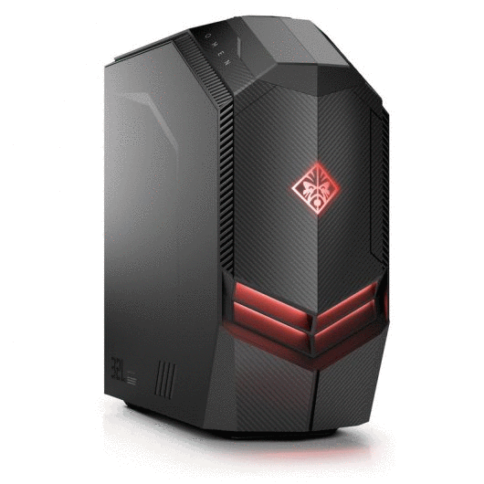
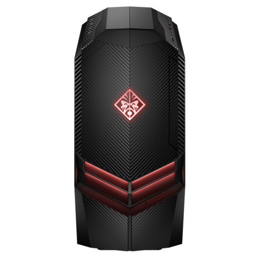
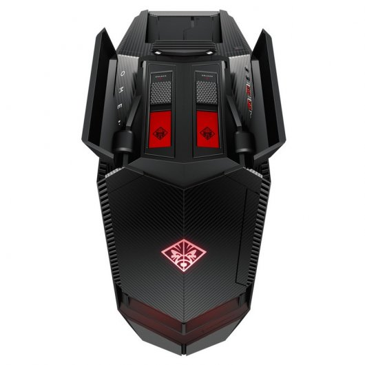
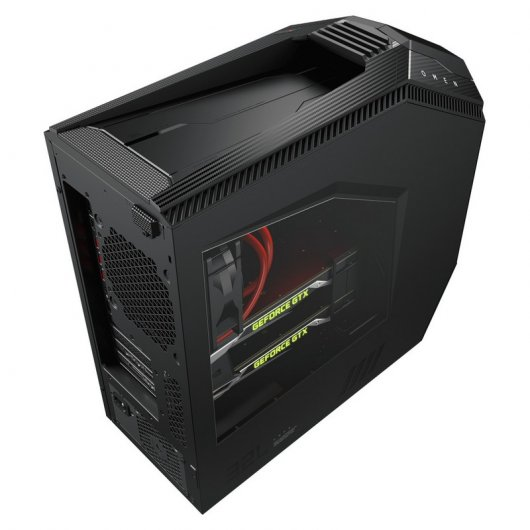

FUTURETECH STORE |
|     |
HP OMEN 880-136NS
1899€
Pasar de un ser un jugador mediocre a uno legendario exige potencia que no requiere refuerzos. El PC de sobremesa HP OMEN 880-136NS posee un diseño de vanguardia, el hardware más reciente del sector y se actualiza con facilidad para aplastar los últimos títulos y darte el rendimiento de primera que la competición te exige. Mantener el objetivo exige una fuerza implacable.
Las aberturas de ventilación en todo el perímetro y los dos ventiladores de 120 mm garantizan que, cuando estés en plena batalla, tu ordenador de sobremesa no se convertiran en el núcleo de un magma. Completa lo anterior con un diseño similar a una máquina y el asa de transporte lista para usar y estará listo.
Subir los marcadores exige una máquina que te pueda acompañar en la hazaña. El equipo de sobremesa OMEN está pensado para aumentar la capacidad de actualización con una puerta libre de herramientas que agiliza el acceso y mantenimiento.
Características
Pensado para la partida final:Mantener el objetivo exige una fuerza implacable. Por eso el equipo deescritorio OMEN puede manejar tarjetas gráficas NVIDIA® o AMD y el último procesador AMD,desbloqueado para que puedas hacer overclocking y puedas enviar a tus rivales al punto de partida.
Mantén la mente fría bajo presión: Las aberturas de ventilación en todo el perímetro, los dos ventiladores de 120 mm y la refrigeración líquida garantizan que, cuando estés en plena batalla, tu PC de sobremesa no se convertirá en el núcleo de magma.Todas estas prestaciones se completan con un diseño similar a una máquina y el asa de transporte lista para usar. Se terminó el juego.
Se pone a tu altura: Subir los marcadores exige una máquina que te pueda acompañar en la hazaña. El equipo de sobremesa OMEN está pensado para aumentar la capacidad de actualización con una puerta libre de herramientas que agiliza el acceso y mantenimiento, y con hasta cuatro ranuras para unidades de disco duro de 3,5 pulgadas (solo en algunos modelos).
Especificaciones
Procesador Intel Core i7-8700K (3.7Ghz , 12MB)
Memoria RAM 16 GB DDR4-2400 (2 x 8 GB)
Disco duro 2TB (7200rpm) + 512GB SSD M.2 PCIe NVMe
Almacenamiento óptico DVD Supermulti (SATA)
Controlador gráfico NVIDIA® GeForce® GTX 1080 8GB GDDR5
Conectividad
LAN 10/100/1000
WiFi 802.11 ac
Bluetooth 4.2
Conexiones
4 USB 3.0 Traseros
2 USB 2.0 Traseros
2 USB 3.0
2 USB 3.0 Type-C™
1 conector de micrófono
1 conector de auriculares
1 PCIe x16; 1 PCIe x4; 2 M.2
Lector tarjetas de soporte HP 3 en 1
Compartimentos para unidades internas: Dos disponibles
Compartimentos para unidades internas: Una ocupada; Una disponible
Conectores de vídeo
1 DVI; 1 HDMI; 3 DisplayPort
Accesorios incluidos
Teclado con USB negro
Ratón óptico USB
Sistema operativo Microsoft Windows 10 64 Bits
Dimensiones 44,21 x 19,2 x 41,72 cm;
Peso 17.6 Kg
Color Negro
|


{kind=link}
{kind=link}
{kind=link}
{kind=link}